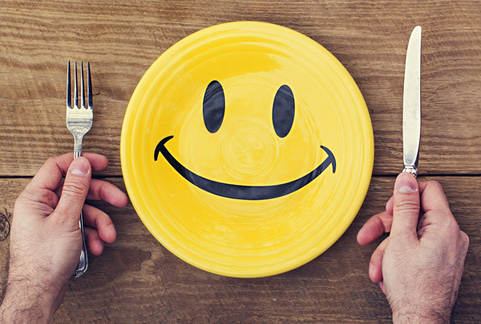
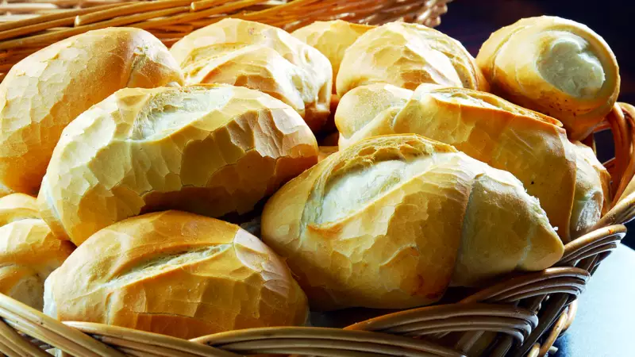
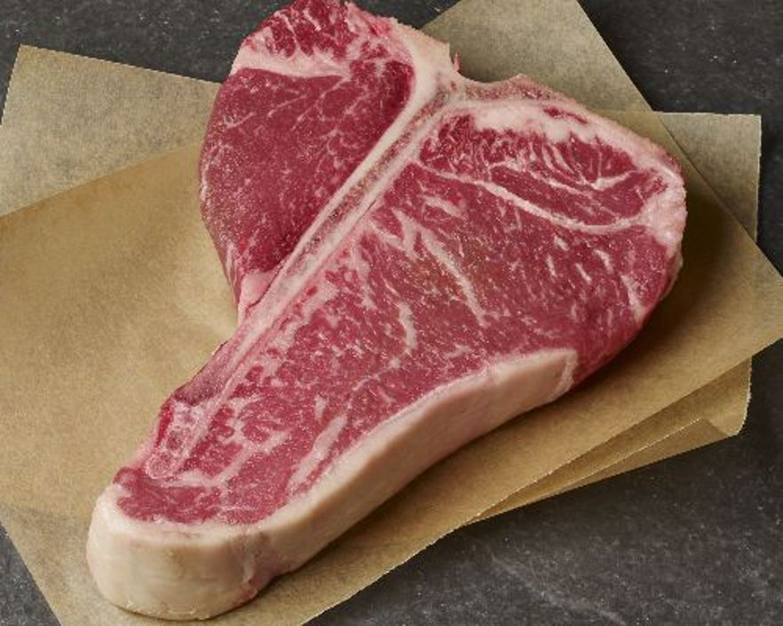
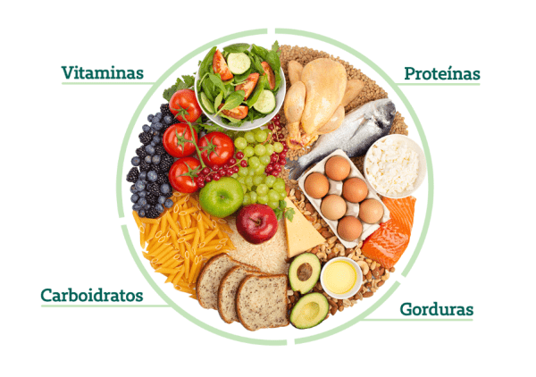

Este é um site de informações nutricionais para um fim educacional
Aqui você vai aprender sobre alguns mitos nutricionais que são "comuns" no dia a dia de uma pessoa,isso de certa forma atrapalha muitas pessoas.

Intuito do site
Esse site foi criado com o intuito de orientar as pessoas sobre fatos nutricionais e ajudar elas a fazer escolhas melhores
sendo assim melhorando de forma geral o bem estar e saúde da população
Vamos lá primeiro alimento "proibido" o PÃO FRÂNCES
Nosso querido pão frânces vem sendo demonizado
Bom o pão frânces vem sendo demonizado pelo seguinte motivo
que ele causa um "pico de insulina" por possuir uma carga glicemica alta
sim de fato o pão frânces possue um indice glicêmico alto e logo se consumido
sozinho vai disparar sua insulina mas se misturado com alguma proteina sua carga
glicemica cai drasticamente e logo após isso se adicionar mais alguma gordura derru-
ainda mais essa carga glicemica tornando o alimento como um todo uma carga glicemica
baixa pois a proteina e gordura desacelera a absorção de carboidrato logo tendo essas
informações porque evitar seu paozinho ? basta adicionar alguma proteina magra ou até
mesmo ovos assim vai se tornar um alimento saúdavel sem abrir mão de algo pratico e gostoso.

Agora vamos falar um pouco sobre dietas da moda
Com o uso facilitado da internet tambem surgiu as famosas dietas "milagrosas" e o final ja
sabemos é desastroso, pois essas dietas geralmente fazem um grande mal a saúde logo vou citar
exemplos:
Dieta do ovo a pessoa aonde a pessoa vai ingerar 6/7 ovos durante o dia com alguma fruta
ou salada sendo assim ela acaba com pouca proteina no fim do dia e um grande deficit calorico
oque em curto periodo vai levar a um emagrecimento maaaas é um emagrecimento nada saúdavel
pois se perde muitos musculos e seu gasto calorico sai bruscamente oque tambem leva um
reganho de peso muito grande após a dieta "milagrosa" fora que pode ter varios colaterais como
que da cabelo , unhas fracas , falta de disposição , mal estar entre outras coisas então se deve
ficar atento.
Dieta carnívora
A dieta carnívora se baseia literalmente em comer somente produtos animais como desde a carne magra
até o sebo junto, ao realizar essa dieta todos os tipos de carboidratos são cortados de forma brusca
então a pessoa até perca peso no inicio devido a falta de gliconico muscular ja que os carboidratos
proporcionam esse glicogenico , então a pessoa pensa que está "emagrecendo" mas no longo prazo essa dieta
acaba prejudicando pois causa baixa disposição e os seus alimentos são altamente caloricos como é rica em
gorduras que possuem 9kcal/g e carboidratos e proteinas possuem somente 4kcal/g sendo assim o reganho de peso
é mais provavél ainda.
Fora tudo isso que acontece acima pode ocorrer falta de muitas vitaminas , queda de cabelo e o principal é que essa
dieta por ser rica em gorduras saturadas vai causar problemas cardiacos futuros pois com muita gordura satura seu
perfil lipidico fica desregulado assim favorecendo um ataque cardiaco/hipertensão.

Dicas nutricionais
Uma dieta saúdavel se baseia basicamente em consumir alimentos de boas fontes evitando produtos processados e
ultraprocessados , escolher alimentos com o menor numero de ingredientes o torna mais natural e saúdavel.
Tendo isso em mente vamos partir para o quesito cultural da alimentação ja que cada estada cada país tem algum
costume diferente mas agora vamos nos basear na alimentação brasileira!
Nosso cardápio é rico em nutrientes , fibras , fitoquimicos e com uma diversidade incrível de alimentos então
variedade não vai faltar exemplos:
Feijão com arroz salada e uma fonte magra de carne está básicamente todos os dias no prata brasileiro e é a
combinação perfeita entre gorduras , proteinas e carboidratos e ainda possue grande variede de fitoquimicos
na salada.
Em resumo quero orientar que uma dieta saúdavel se baseia em alimentos simples com arroz , feijão , mandioca , batata inglesa
carnes magras no geral , frutas , legumes , oleogenosas.
